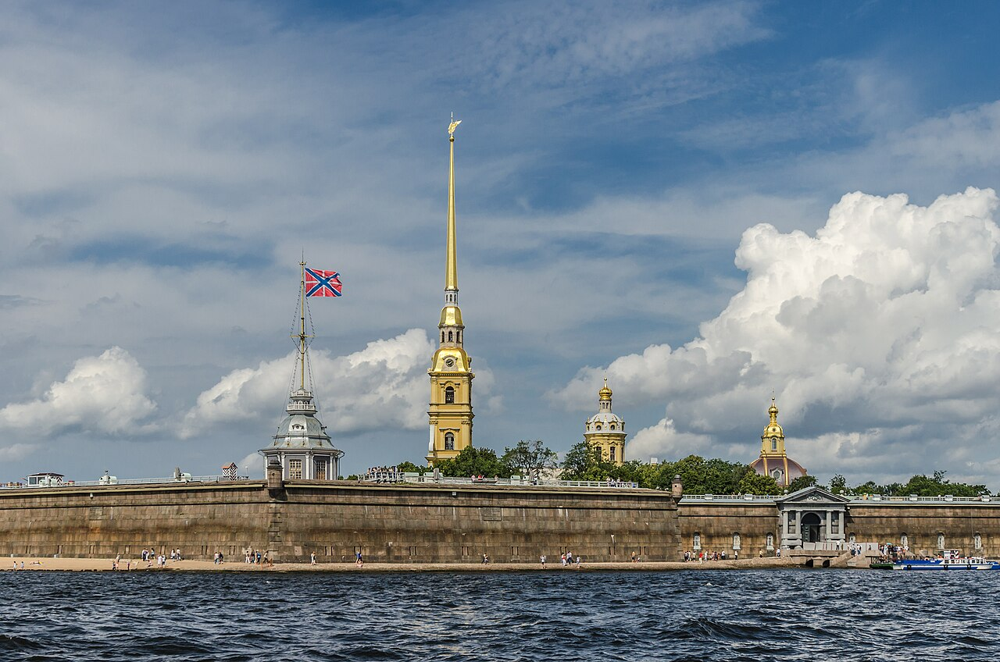

TRIPROTARVISOR
La Venezia del Nord

Le attrazioni di San Pietroburgo
Non esiste un modo giusto per vedere la città, ma ci sono posti che un viaggiatore dovrebbe mettere in lista per primi. Questi sono i quattro che abbiamo scelto noi, con i tre più importanti a sinistra.
Museo dell'Ermitage
Il museo più grande del paese, dentro il Palazzo d'Inverno, con dipinti di Caravaggio, Raffaello, Rembrandt e Van Gogh. Anche solo la sala principale vale il biglietto. Vai alla pagina dell'Ermitage
Peterhof e i palazzi
Non è in centro, serve un mezzo per arrivarci, ma la Grande Cascata vale il viaggio: Pietro il Grande la volle come risposta alla reggia di Versailles, e le fontane funzionano solo per qualche mese. Vai alla pagina di Peterhof
Fortezza di Pietro e Paolo
È il primo edificio costruito in città, nel 1703, e ci sta ancora la cattedrale con il campanile più alto di tutta la Russia, che è anche il simbolo sulla bandiera della città. Sui bordi del fiume, un po' più lontano, ci sono le tombe degli zar, tra cui quella di Pietro I e quella di Nicola II con tutta la famiglia.
Teatro Mariinskij
Aperto nel 1860, è il teatro dove tutti gli anni si tiene il festival di opera e balletto più importante della stagione. Anche se non siete appassionati, la facciata blu e bianca merita una foto.
Un consiglio pratico: l'Ermitage e il Mariinskij vanno prenotati, soprattutto in estate. La Fortezza invece si può visitare anche la sera, e in quel caso l'ingresso al cortile è gratis: si entra dalla porta principale e si attraversa senza biglietto.